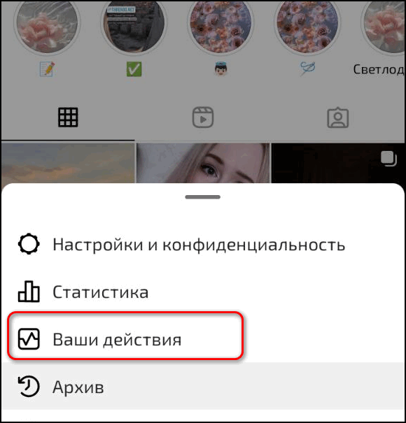
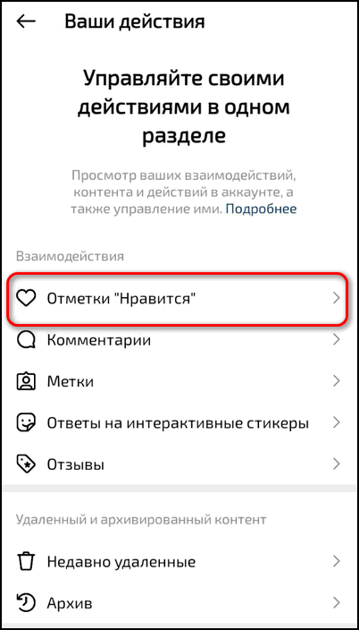
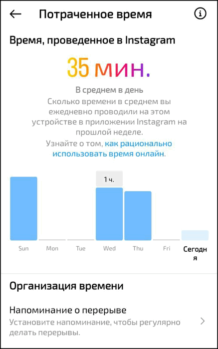
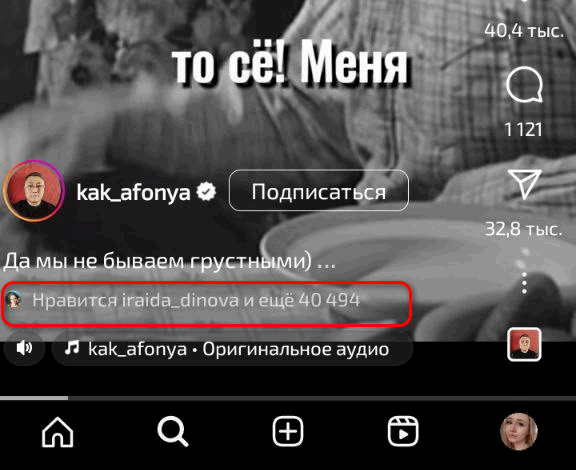
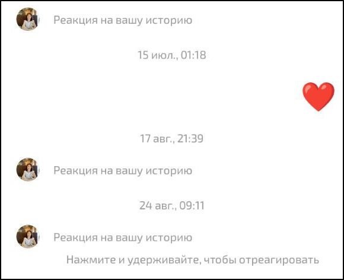
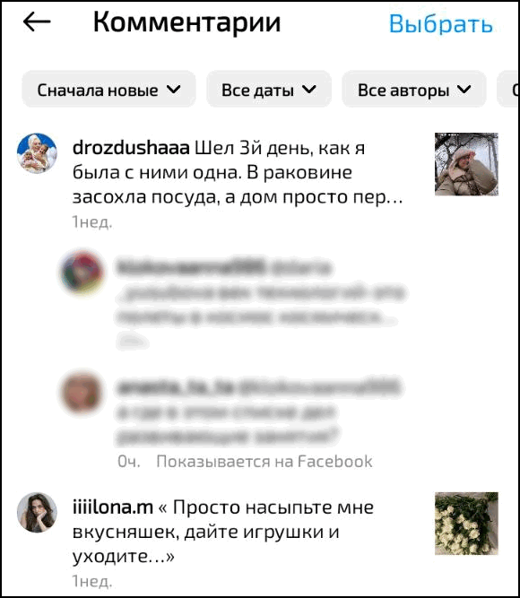

Как в Инстаграм посмотреть понравившиеся публикации и видео

В Инстаграме* посмотреть понравившиеся публикации каждый пользователь может через панель настроек. Там находится новый раздел: «Ваши действия», который отображает любой вид активности.
Список понравившихся постов в Инстаграме*
Записи, которые нравятся владельцу страницы, отправляются в раздел: «Взаимодействия». Найти лайкнутые фото и видео в Инстаграме* можно именно там, но исключая записи, которые были отдельно сохранены. Социальная сеть предлагает два вариант сохранения интересного контента:
- через отметки: «Мне нравится»;
- добавить в «Сохраненное».
Второй вариант включает создание подборок: конфиденциальных или совместных постов. К общей подборке можно присоединить человека из списка взаимных друзей и пополнять коллекцию вместе.
Посмотреть понравившиеся посты:
- Зайти в Инстаграм* - нажать по значку своего профиля.

- В правом верхнем углу три вертикальные полосы – Ваши действия.

- Отметки «Мне нравится».
Появится список постов, которые были отмечены владельцем страницы. В этот перечень входит и записи только с фотографиями, и Reels.
Ваши действия: новый раздел
Раздел «Ваши действия» был добавлен в одном из обновлений и выполняет функцию счетчика действий. Там владелец страницы может проверить сколько времени в день тратит на социальную сеть, кому отправил комментарий и поставил лайк, проверить метки под постами и отклики на товары.

Чтобы перейти в него, нужно открыть свой профиль и нажать в правом верхнем углу по кнопке: «Настройки». Появится дополнительный раздел: «Ваши действия», где есть подразделы с определенным видом активности. Примечание: сохраненное или то, что пользователь отправил в «Избранное», находится в отдельном разделе, там же по кнопке: «Настройки».Как работают рекомендации
Посмотрев лайкнутые фото в Инстаграм*, владелец аккаунта сможет определить темы своих рекомендаций. Порой пользователи задаются вопросом: «Почему видео определенной тематике им постоянно советует социальная сеть?» и на это есть простой ответ: то, что некогда было отмечено интересным и то, что отмечают полезным взаимные друзья. То есть, рекомендации складываются из интересов друзей и самого пользователя.
Смотреть что понравилось друзьям
Смотреть понравившееся в Инстаграм* друзей, с последними обновлениями в конфиденциальности, стало невозможным. Официально социальная сеть отключила оповещения: «Понравилось вашему другу», но оставила лазейку в виде отдельных постов. Переходя в раздел: «Интересное» и просматривая посты, пользователь может заметить надпись: «Понравилось вашему другу @никнейм» или «Было прокомментировано».

Один из вариантов, как узнать что нравится друзьям – специальный сервис. С его помощью видны отправленные и полученные лайки. Для работы нужно авторизовать внутренний профиль (зарегистрироваться). Указывать персональные сведения из Инстаграма* не нужно, что открывает доступ к привязке чужой страницы. Как узнать, кому ставит лайки друг:- Зайти в сервис по ссылке выше – зарегистрировать внутренний профиль.
- Перейти к «Добавить цель» - указать никнейм пользователя за которым нужно следить.
- Нажать по «Обновить данные» - подождать, пока загрузятся сведения.
- Перейти в раздел: «Лайки» - Отправленные.
Таким образом можно определить, чьи лайки влияют на рекомендации. И владелец страницы может отметить подобные темы, как «неинтересные» через меню «Контент, который вы видите».
Понравившиеся Сторис: как узнать
Если посмотреть понравившиеся Рилс в Инстаграме* возможно через раздел: «Ваши действия», то отлайканные Сторис видны в личных сообщениях. Если пользователь отправлял реакцию на чужую короткую публикацию, то в личной переписке будет значок. Как посмотреть, какие записи тебе понравились:
- Зайти в Директ – перейти к сообщениям.
- Посмотреть, какие Истории ранее были отмечены как интересные.

Если запись была опубликована более суток назад, то само изображение или видео не появится. В личной переписке будет отображена надпись: «Отправил реакцию». Чтобы в дальнейшем просматривать чужие посты, которые понравились – стоит делать скриншоты или скачивать через дополнительные сервисы. Например, Instanavigator, где достаточно указать ссылку на человека или его никнейм, чтобы получить список последних постов и временных записей.
Оставил комментарий: узнать ответы
Нравится в Инстаграме*, оставленные комментарии и возможность их массового удаления есть в разделе: «Ваши действия». Посмотреть отклики, которые оставил:
- Зайти в Инстаграм* - Ваши действия.

- Комментарии – появится список отзывов, которые были ранее оставлены.
Там же, нажав по одной из записей, можно выделить отклики на удаление. Этим методом можно очистить целую ветку из сообщений и не получать более уведомлений и ответов на свой комментарий. В перечне есть отзывы, оставленные пользователем более месяца назад. Это один из способов, как возвращаться к публикациям, которые владелец страницы не отметил в раздел: «Понравившееся», но прокомментировал.
Не нашел нужной записи
Не отображаются посты, которые лайкнул в Инстаграме*? Значит публикация была удалена или автор поста заблокировал «лайкера». Другие причины, почему не видны эти записи:
- пользователь не поставил лайк. Так бывает, если случайно поставить «Мне нравится» несколько раз;
- пост был удален или заблокирован из-за нарушений правил Инстаграма*;
- сам пользователь заблокирован у автора публикации.
Если вспомнить тему записи, то её можно найти через другой аккаунт у автора. Для этого нужно запомнить никнейм и авторизоваться через вторую учетную запись. Если публикация есть на странице, значит пользователь заблокирован или не поставил лайк. Но если запись отсутствует, значит автор её удалил, она была заблокирована или архивирована. Также владелец страницы может установить особые параметры конфиденциальности для каждого фото и видео.